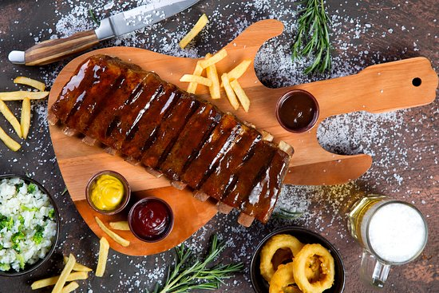

Rock & Ribs
O restaurante Rock & Ribs também ocupa uma das galerias do Armazém do Porto e se destaca pela temática musical. Com infraestrutura desenhada para os amantes do Rock, o espaço combina música ao vivo com refeições deliciosas. O cardápio oferece pratos da culinária americana e brasileira, lanches, grelhados e diferentes tipos de bebidas e drinks. Um prato que vale a pena provar é o Penne Carbonara, muito elogiado pelos visitantes.